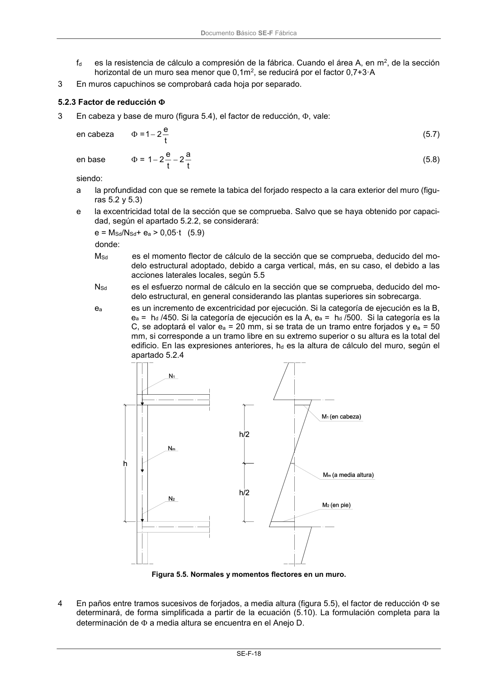

DB-SE-F Fábrica · edición 2019-12-20 · capa oficial
Documento DB-SE-F-oficial · SHA-256 del PDF e3e0805c3b4c307519c26dc34c3fdbf143d842edd013c91b0f52d2c73403d91c
Copia fiel del PDF fuente · Fuente oficial
Ficha de la disposición en la fuente oficial
Formatos: JSON del segmento · Markdown
5.2.2 Capacidad portante 1 En todo paño de un muro de fábrica, la compresión vertical de cálculo, Nsd, será menor o igual que su resistencia vertical de cálculo, NRd, es decir: NSd NRd (5.5) 2 En muros de una hoja (o de dos hojas unidas rígidamente), la capacidad resistente vertical de cálculo a compresión vertical, NRd, por unidad de longitud, vale: NRd=·t·fd (5.6) donde: es el factor de reducción del grueso del muro por efecto de la esbeltez y/o de la excentricidad de la carga que se calcula según el apartado 5.2.3. t es el espesor del muro Documento Básico SE-F Fábrica SE-F-18 fd es la resistencia de cálculo a compresión de la fábrica. Cuando el área A, en m2, de la sección horizontal de un muro sea menor que 0,1m2, se reducirá por el factor 0,7+3·A 3 En muros capuchinos se comprobará cada hoja por separado.
